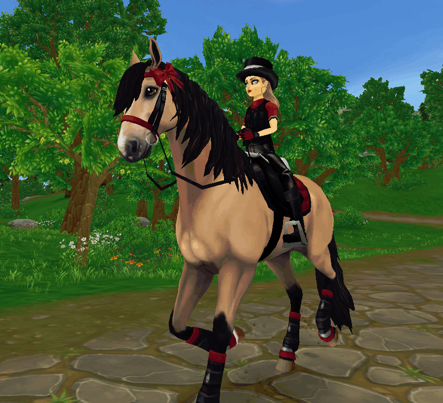

This racing outfit doesn't only look fabulous but also has great stats! The hat can be found in the quick shop, the jacket is from the clothing shop at the mall, and the gloves, boots, and pants are from the Jollister located in Govenor's Falls. The saddlepad and bridle are available at the horse equipment shop at the mall and the leg wraps are found at the horse accessories shop at the mall. I got the saddle from the quick shop and the mane and tail bows are from a code that may or may not be expired, "OPENHOUSERED". For extra pizzaz, add the "Cute Baker's Saddlebag" from Jamie's shop in New Hillcrest and in it, put the cute donkey that you get from Mary's donkey-finding quest by Jorvik Stables.